UNIVERSITIES
Masked Heroes Initiatives has branches at these universities.
University of California, Los Angeles


Darlene Kabigting, Co-President
I am a second year student at UCLA, currently pursuing a degree in Biochemistry. In the future, I plan to work in healthcare or a career that allows me to make advances in medicine. As a member of MHI, I oversee the UCLA branch as co-president along with organizing mask donations as an Operations committee member. Joining MHI has allowed me to work with underprivileged and underrepresented communities, something I have been passionate about my whole life. In my free time, I like to journal, listen to music, play video games and go on adventures!Megan Vu, Co-President
I am a second-year attending the University of California, Los Angeles (UCLA) as a Biology major and Asian American Studies minor. I hope to pursue a future career in the medical field with an interest in pediatrics. As an undergraduate, I am passionate about helping others through clinical work and providing an impact for underprivileged communities in Asian Pacific Health Corps. I am also currently involved in Foundations Choreography as the Showcase Chair and SEA CLEAR as part of the mentorship workgroup. In my free time, I love to bullet journal, play the piano, and exercise. My role in MHI is to oversee the UCLA branch as well as organize and purchase PPE for areas in need. Contact me at megantsvu@g.ucla.edu with any inquiries or opportunities.Rainey Williams, Vice President
Hello! My name is Rainey Williams and I am a second-year studying Linguistics and Computer Science at UCLA. In the future I hope to work in the field of computational linguistics. I organize the donation and distribution of PPE to medical centers, retirement homes, and small businesses in California and across the country. I firmly believe in the mission of MHI and I’m confident in our team’s ability to make a difference during this pandemic. In my freetime I like to draw, watch documentaries, and explore LA (pre-covid times of course!)Jae Jeon, Treasurer
Hey! My name is Jae Jeon and I am a second-year Psychobiology major at UCLA. I am staying in South Korea for the fall quarter. In the future, I hope to pursue a career in medicine, specifically in adolescent psychiatry. My role in MHI is to organize the receipts and keep track of all sources of income and spending at MHI and the UCLA branch. Outside of MHI, I am currently assisting research in stroke and stroke recovery, and I work part-time at a Vietnamese restaurant. I also work as a TA at an English academy, where I tutor middle school kids after school. In my free time, I like to eat outside with my friends, exercise, or watch TV shows.Nitish Patel, Social Media Committee Chair
Hey there! My name is Nitish Patel and I’m a second year Neuroscience major at UCLA, currently based in Dallas, Texas. I hope to one day pursue a career in degenerative brain disease research, but for the time being I’m working with MHI to create social media posts to spread awareness of the COVID-19 virus and its socioeconomic impacts worldwide. In my free time, I like to watch (and play!) soccer and play the piano!Carolynn Pham, External Finance Committee Chair
I am a second year pursuing a Bachelor of Science degree in Psychobiology with a minor in Gerontology at University of California, Los Angeles. I wholly enjoy working with elders, and I hope to make my passion for geriatric medicine into a career in the future, alongside working to raise awareness on elder abuse, and contributing wholeheartedly to geriatric’s research to make a difference. Outside of MHI, I am in a program that supports and cares for patients with dementia, an internship supporting surgical doctors in the hospital, a research lab on neurological brain diseases, and a Pre-Medical club. In my free time, I enjoy reading, exploring philosophy, poetry, spending quality time, and helping others.Adila Ahmed, External Finance Committee Chair
Hello! My name is Adila Ahmed and I am an incoming freshman at UCLA pursuing a Bachelor's degree in Biochemistry on the premed track. I plan to pursue a career in the medical field with a potential focus in neurology or cardiology. At the high school level, I was involved in Mock Trial, Speech and Debate, TedX, Science Olympiad and various other extracurriculars that allowed me to work on my public speaking and communication skills, strengthen my leadership abilities, and discuss important topics in our world. As a part of External Finances in MHI, I mainly work on fundraising, applying for grants, and communicating with businesses to cooperate with. Outside of academics, I enjoy mentoring middle school students in Los Angeles county and tutoring students in STEM. In my free time, I enjoy dancing, music, playing tennis, watching a lot of Asian dramas, and exploring my Indian heritage!Anya Holbrook, External Finance Committee Member
Hi, my name is Anya Holbrook and I am a second year Molecular, Cell, and Developmental Biology major at UCLA, currently studying in the Bay Area for the fall quarter. In the future, I hope to pursue either a career in pediatrics or genetics, potentially genetic medicine. For the time being, I am working with MHI as a member of the external finance team in order to give back to my community and help make a difference during the COVID-19 pandemic. In my free time, I enjoy cooking, painting, watching and doing gymnastics, and exploring the Bay!Andrew Liang, Operations Committee Chair
Hi! My name is Andrew Liang and I am a second year undergraduate student at UCLA majoring in Molecular Cell and Developmental Biology (MCDB). As a part of the MHI Operations committee, I actively work alongside Operation board members to organize wholesale purchases, contact suppliers, and deliver masks to places in need throughout SoCal. As Covid-19 continues to impact the lives of millions, MHI will not cease to provide aid until the day Covid-19 is defeated. Outside of MHI, I serve as an honors mentor for the College Scholars Program at UCLA. I am also a part of a research team at UCLA that examines healthcare literacy in underrepresented communities such as Asians and Pacific Islanders in LA. In my free time, I enjoy painting, writing journals, and watching movies!University of California, Berkeley


 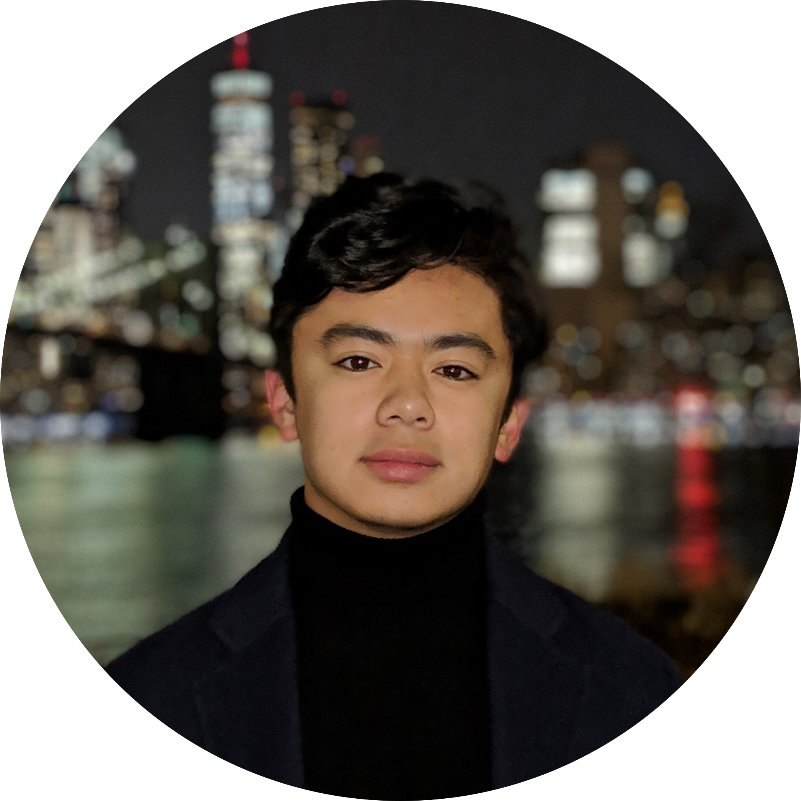
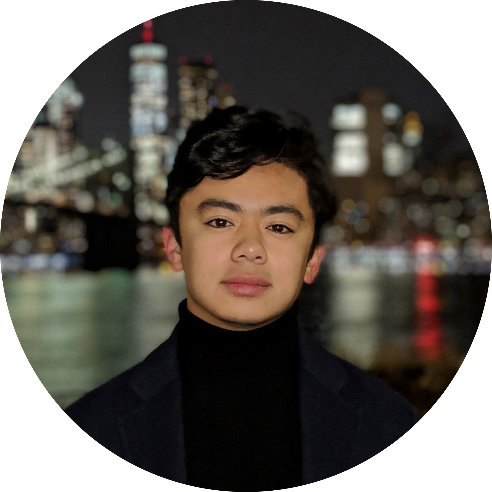
Jay Kim-Turner, President
I am a sophomore attending the University of California, Berkeley studying political science and economics. In the past, I have heavily been involved in speech and debate events, with a particular emphasis on Parliamentary debate and Impromptu speech. I had the high honor of serving as President of my high school’s Speech and Debate team during my senior year. Some things I like to do in my free time are watch and play sports, TV shows, and movies, as well as exercise.I started the Masked Heroes Initiative because I believe that we cannot sit on the sidelines and expect for COVID-19 to disappear. It is up to us — all of us — to actively defeat it together and put this crisis behind us.Emma Wood, Co-Vice President
Hi friends! My name is Emma Wood, and I’m a freshman at the University of California, Berkeley studying Electrical Engineering and Computer Science. As Director of Technology for Masked Heroes Initiative, my responsibilities include running our website and collaborating with other team members to present updated COVID-19 information to the public. My hobbies include travelling, kayaking, reading political theory, having bonfires at the beach with my loved ones, and playing with my dog and two cats. I hope to someday work as a software engineer for a nonprofit organization and perhaps open my own homeless shelter or animal sanctuary. To reach me with questions or business opportunities, you can contact me at my email: woodemmalea@berkeley.edu.Lizzy Trinh, Co-Vice President
Hi! I’m Lizzy, a second year at UC Berkeley studying Pre-med and Psychology. I hope to make health education and medical care more accessible to underserved communities, especially as marginalized groups are disproportionately burdened by the Covid-19 pandemic. I currently spend my time working at medical clinics to provide Covid-19 testing and vaccinations to the public. I'm also a mentor for Oakland middle schoolers and help them navigate social isolation and the transition to online school. In my free time I like to listen to music, bake, and go on hikes! Say hi to me at elizabeth.trinh@berkeley.edu :-)Anooj Desai, Director of Technology
Hi, my name is Anooj Desai and I am currently a sophomore at UC Berkeley studying Computer Science and Data Science. My interests are in the areas of data structures, machine learning and data analytics. I am also passionate about the intersection between technology and social good. I deeply resonate with the mission statement of MHI and want to continue to build the website and hopefully develop new technologies that will assist with the club’s activities. Besides MHI, I am a part of the Events Committee of ANova, a club at UC Berkeley dedicated to mentoring students of all backgrounds in computer science and I am also a project manager at Data Science Society (DSS) at Berkeley. My hobbies include playing volleyball, following the NBA, discovering new recipes to cook, and playing the keyboard.Ryan Li, External Finance Committee Chair
Hi, my name is Ryan and I’m currently a second-year at UC Berkeley studying Economics and Data Science. I joined MHI because I saw the impact they had on underprivileged communities, and I wanted to give back in the same way. I have been working with other members of the team to secure more funding as well as build partnerships with other campus organizations. Outside of school, I enjoy skateboarding, building things, playing video games, and watching TV series. In the future, I hope to start a business focused around social responsibility and impact.Makena Umnas, Social Media Associate
Hi! My name is Makena Umnas and I am a first year at UC Berkeley studying Psychology and Public Policy. In my free time, I enjoy going to the beach, hiking, reading, and trying new food places! Another hobby of mine is making jewelry and I even started my own small business that donates to various causes. As part of the Social Media Committee, I help create and oversee content on all our social media platforms. I’m so excited to be a part of MHI’s new UCB branch, and am grateful to give back to the community, especially those disproportionately affected by COVID-19.Aaron Tamura, Board Member
Hello! My name is Aaron Tamura and I am an Economics major attending University of California, Berkeley. I came onto the team to work as the head of strategy for the purpose of bringing exposure, as well as expansion, to the cause of helping those in need in the best ways that we can. Some of my hobbies include swimming, snowboarding, photography, and saxophone playing! I love to take the experiences I’ve had to help bring exposure to the purposes our community has dedicated themselves towards.University of California, Irvine
 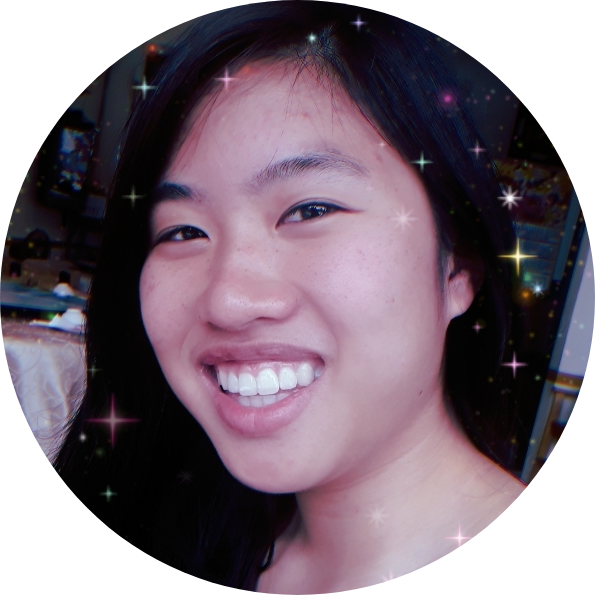
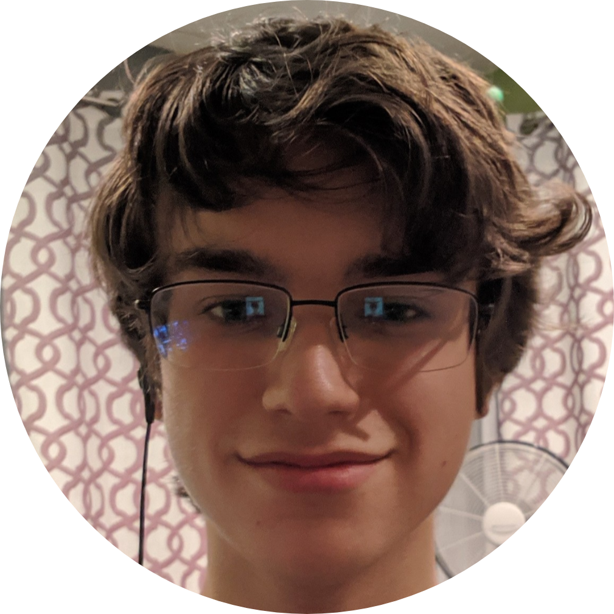
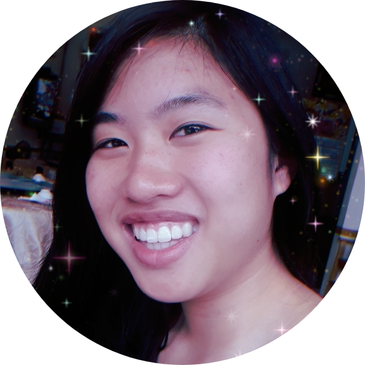
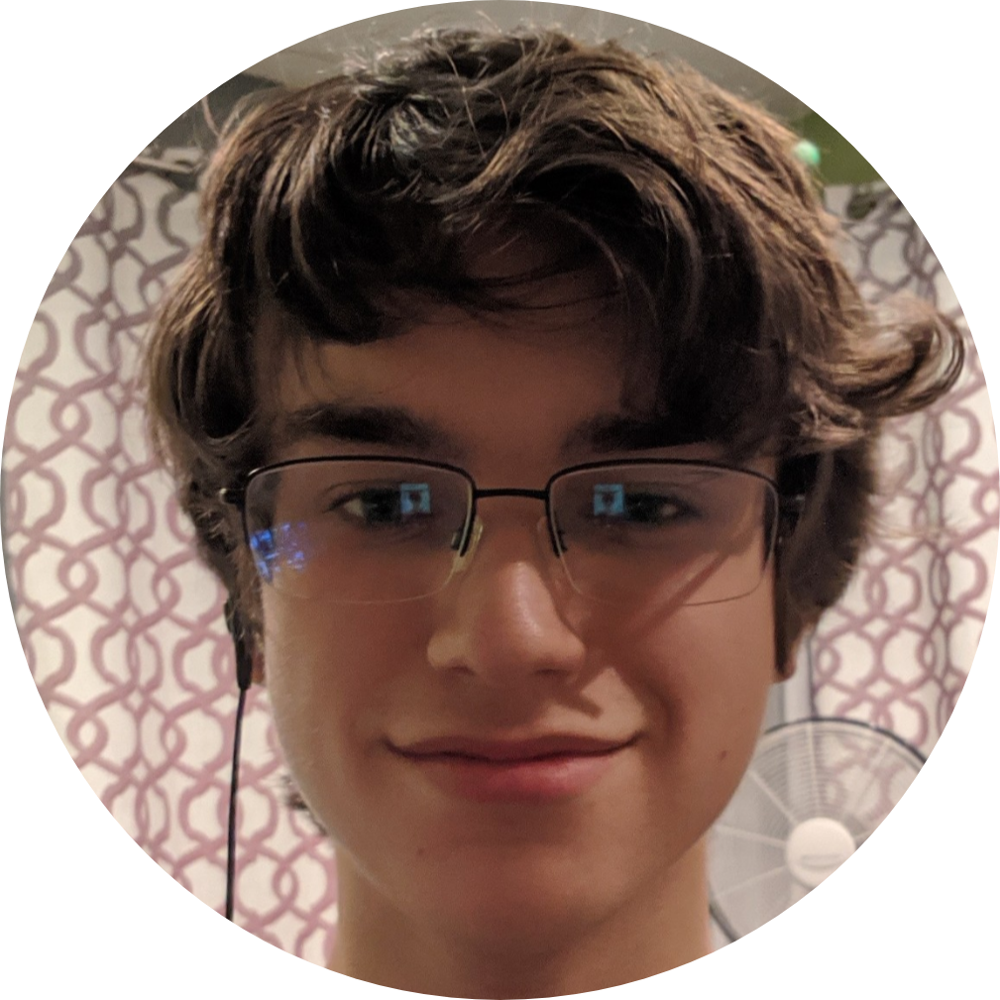
 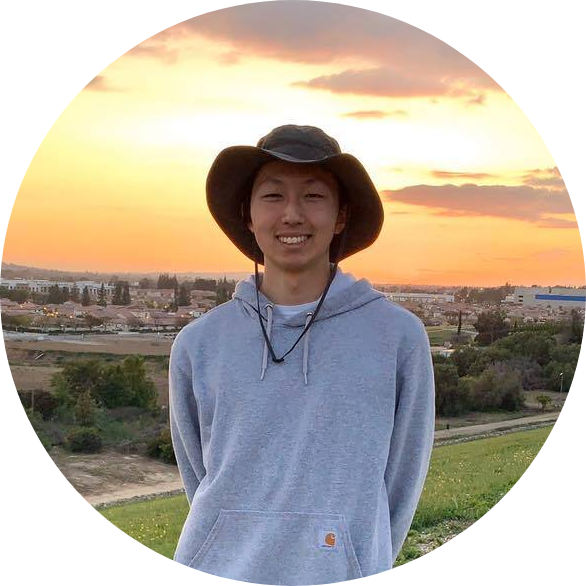
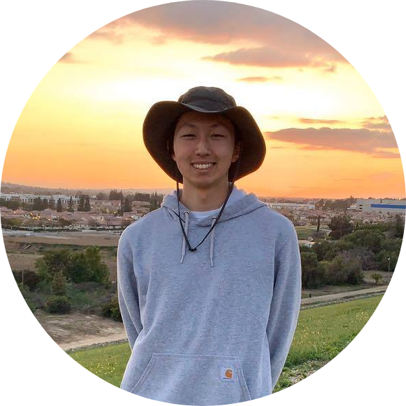
 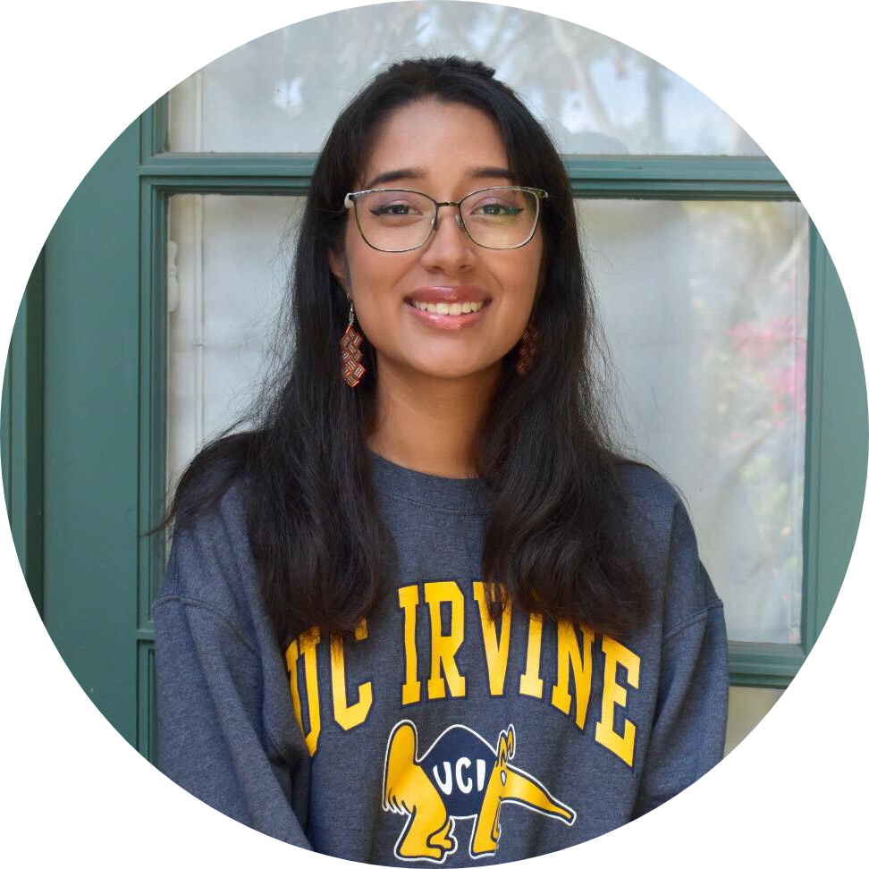
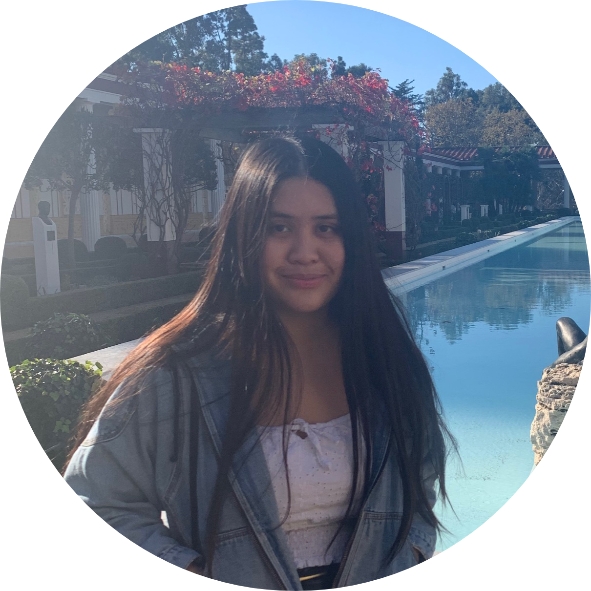
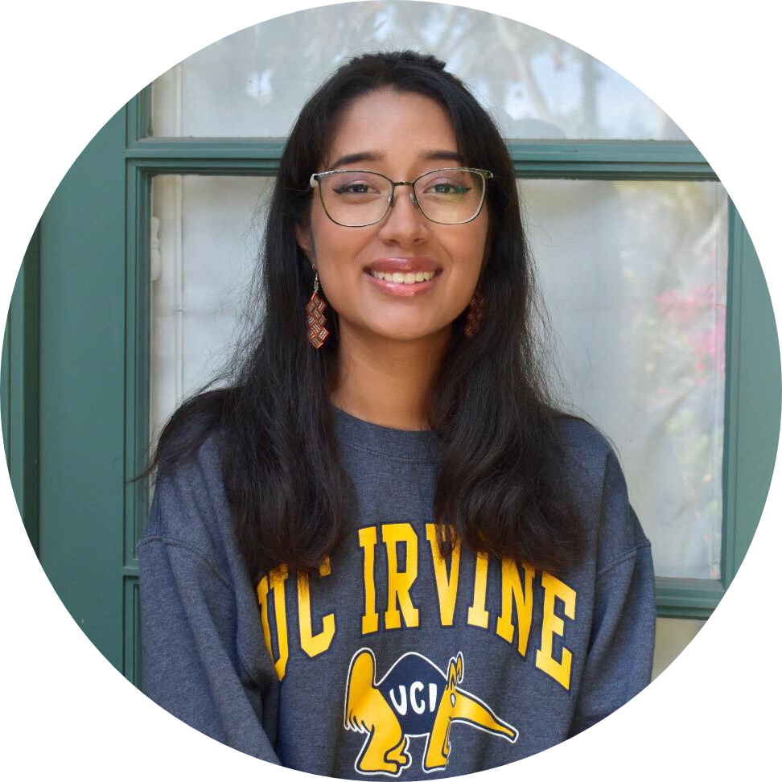
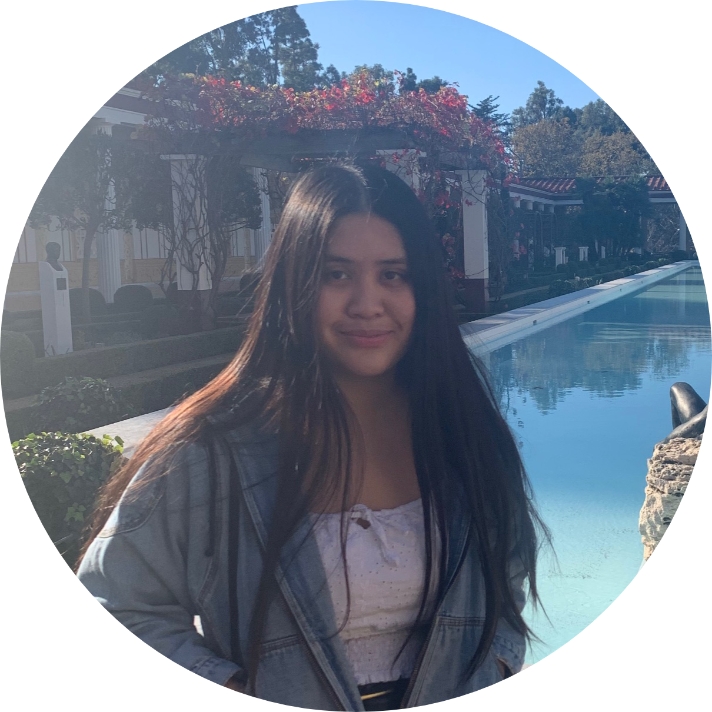

Natalie Chen, Co-President
Hello! I am currently a second-year student at UCI, majoring in Public Health sciences. I joined MHI in hopes that my teammates and I can have a significant impact in reducing the spread of Covid-19 in disadvantaged communities. As co-president, my responsibilities included initiating the new club registration process at UCI and assigning specific roles to incoming members. I have loved collaborating with others on this very important goal and am excited to meet more newcomers joining our team. Outside of MHI, I have enjoyed volunteering at hospitals, assisting children in after-school programs, swimming, and exploring new places in SoCal. In the future, I envision myself pursuing a career in epidemiology and disease prevention. Overall, I hope I can dedicate my career to mitigating the quantity of preventable deaths on a national, or even global scale.Liz Wiriadinata, Co-President
Ahoy there! I am a 2nd year UCI Biological Sciences Major, currently residing in my family home in sunny SoCal. I’m an aspiring cardiologist by day, Minecraft player by night. During the in-between, I spend my time tutoring middle and high school students in biology, chemistry, and English. I’ve also been fortunate enough to do research in the cardiology division of Kaiser Riverside on possible new treatments for atrial fibrillation patients. In my other-other spare time, I enjoy writing, drawing and embroidery (better for stitching up future patients, I like to say!)Aidan Arthur Gelston, Vice President
Hello! My name is Aidan Gelston. I’m a second year undergraduate at the University of California, Irvine, in the school of Biological Sciences. I’m currently working to approve MHI as an organization at UCI, and from there my next task will be recruiting new members to allow the club to plant down strong roots at UCI. Aside from MHI, I am currently working in the Weiss research lab, where I’m helping to research development of better protein detection systems, which has important applications like bladder cancer diagnosis. My hobbies are reading, writing, and camping!Aaron Moy, Treasurer
Hi! My name’s Aaron and I’m a second year at UCI studying biology. I’m hoping to specialize in genetics or microbiology and eventually pursue a career in clinical healthcare. One subject of interest is drawing connections between genetic aberrations and organismal behaviors. I joined MHI because I strongly believe in providing equitable access to PPE and healthcare for socioeconomically disadvantaged communities; due to my past experiences as Treasurer and Secretary of my high school’s Key Club, I can make the biggest impact working in Internal Finances. In my free time I enjoy drinking tea, longboarding, playing ping pong, and learning how to cook without burning my food.Isoo Yoon, Director of External Finance
Hello, my name is Isoo Yoon and I am the external finance rep at UC Irvine. I am currently a second year Biological Science major. I hope that MHI can lift some of the burden from the underprivileged communities during the COVID-19 pandemic. I currently volunteer at a local hospital, so I have seen the importance of personal protective equipment to prevent the spread of the virus. I hope that I can be of help to the MHI community through fundraising events. Outside of school, I like to read, watch movies or TV shows, and huddle under the blanket.Sandra Del Carmen Sandria, Director of Social Media
Hello! My name is Sandra Del Carmen Sandria and I am a fourth year at UC Irvine studying Biological Sciences. In my free time I like to paint, try new food places, and walk my dog! I am currently a volunteer at UC Irvine’s Free Outreach Clinic and have seen firsthand the severe impacts Covid-19 has had on marginalized communities as well as healthcare professionals. I’m very excited to be part of Masked Heroes Initiative and help raise awareness about the pandemic and provide PPE to our heroes on the frontline. Social media is a powerful tool in this day and age, and I’m greatly looking forward to making helpful and informative content with the Social Media Committee!Caroline Mac, Director of Operations
Hi, my name is Caroline Mac! I'm currently a second year Biological Sciences major and Global Health minor at UCI! I've always been interested in public health, especially across different communities and cultures, and how our health institutions and communities can assist the underprivileged. I was drawn into MHI because of its essential and vital mission of promoting health and unity during this pandemic, and I'm looking forward to putting my work into the Operations Committee! In my free time I enjoy making music playlists, playing the piano, and cooking pastas and noodles!Eugene Cho, Operations Board Member
Hello, my name is Eugene Cho and I am a second year PharmSci major at UC Irvine. I hope to learn and create medical and healthcare more accessible to the people in need. My passion for helping people started when I volunteered at nursery homes for Korean elders.It felt like I could really help them, even if I was not doing much! I hope that I can support and help MHI give proper PPE to people in need, and help make everyone feel safe, especially during COVID-19. When I have free time, I love to listen to music, take naps, and socialize with my friends through facetime (because of current circumstances).Julian Shin
Whats up! My name is Julian Shin and I am currently a 2nd year student studying Film at UC Irvine where I hope to work in the entertainment industry some day. One of the reasons I decided to join MHI was to be able to help those communities who have been impacted by COVID and to help our healthcare workers fight against this pandemic. It takes all of us to fight against this pandemic and we still have a long way to go in order for our world to be safe. On my own time, I enjoy playing my favorite songs on my electric guitar, taking film photos, and snowboarding.Callista Gill, Board Member
Hi friends! My name is Callie, I’m a freshman at UC Irvine studying Drama, and I hope to double major in Criminology, Law, and Society as well as minor Music. I also study circus arts at Ruby Karen Project and Tae Kwon Do at Shambala Black Belts Dojo. I run an activism account on instagram @pinchofactivism, play keyboard and sing in my friend’s band, write music and sci-fi novels in my free time as well as participate in social activism and creative composition in general. I connect our team with protests and organizers to donate masks in the recent Black Lives Matter marches and interact with people who could support our cause. Thank you to everyone who has! I hope to be able to connect with you all one way or another.University of California, San Diego
 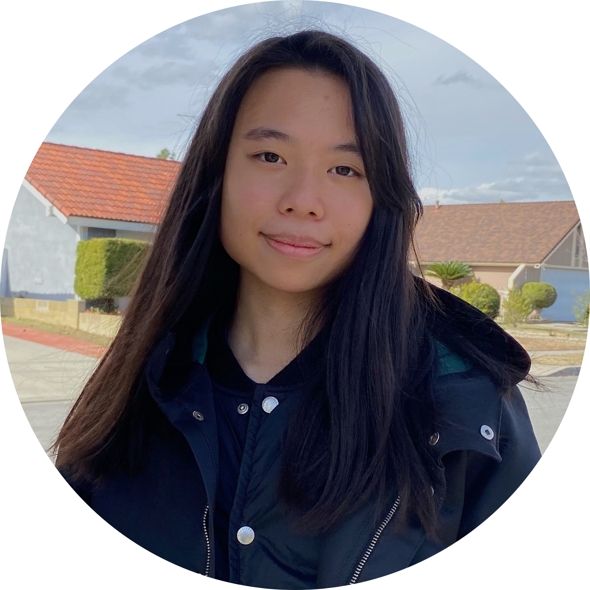
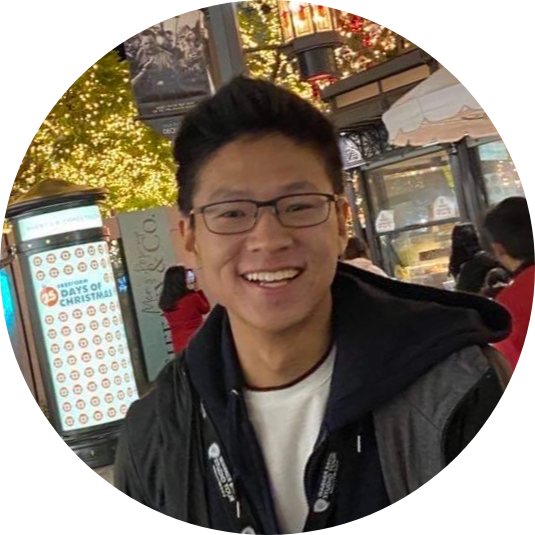
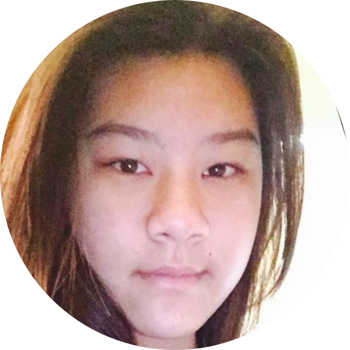
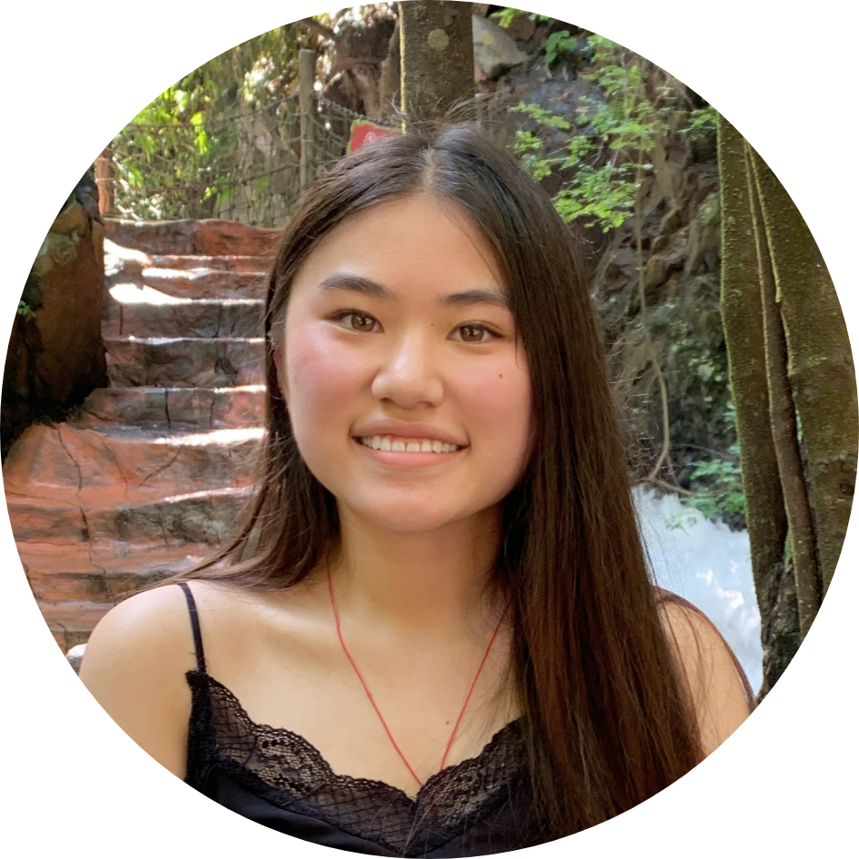
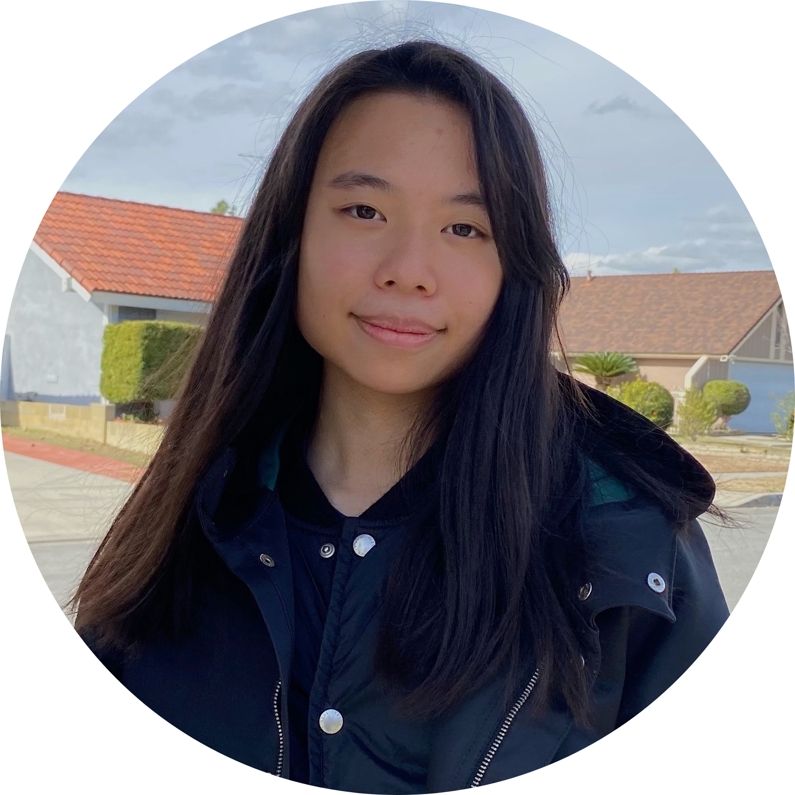
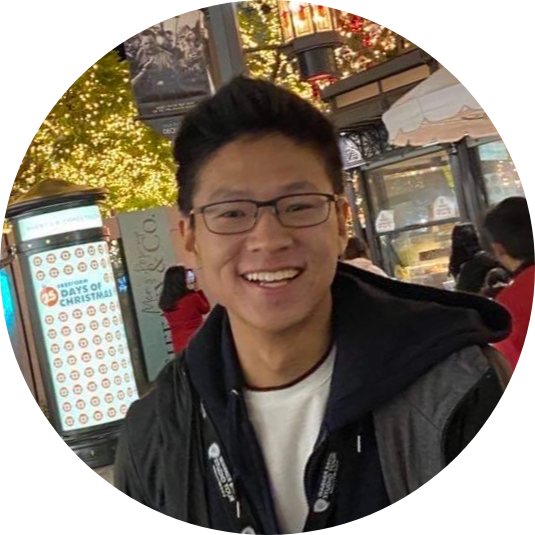
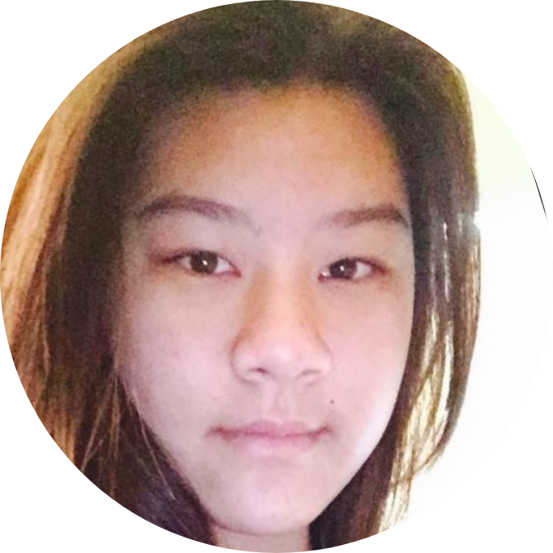
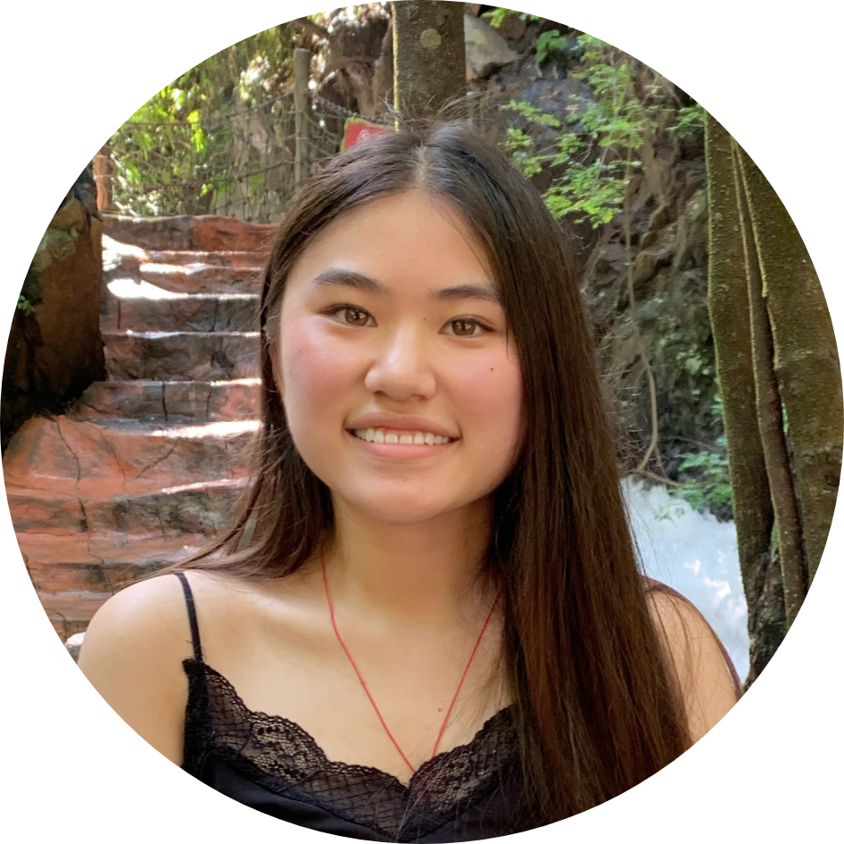
William Chung, President
Hello! My name is William Chung and I am a second year computer science major at UCSD. One of my hopes for the future is to be able to apply what I am learning now to a worthwhile and beneficial cause, a hope that has in part led me to Masked Heroes Initiative. I joined MHI as a way to contribute to combating the COVID-19 public health crisis because I believed that the only way to get through it is together. Since joining, my belief in community action and service has only been strengthened. I am looking forward to all the amazing work that MHI and my branch at UCSD will accomplish, and I am grateful to be a part of it all. On a more personal note, in my free time I enjoy spending time with family and friends and just exploring, from exploring nature to exploring topics I haven’t learned about before!Adele Hong, Vice President
Hello! I am currently a second-year general biology major at the University of California, San Diego. My responsibilities in MHI include assisting the President with planning and organizational tasks. As a secretary, I also document important points of discussion for meeting minutes. I joined MHI to help those especially impacted by the pandemic and to collaborate with others across campuses to achieve a common ambition. My goal for MHI at UCSD is to relieve resource shortages for essential workers beyond the La Jolla area. Aside from my involvement with MHI, I am a mentor to first generation, low-income students in the Triton Leadership Community Institute, which further contributes to my passion for serving disadvantaged groups and working towards social equity. My passion extends beyond helping others and includes dancing, kite-flying, and engaging in philosophical discourse.Carlo Miguel Ong, Treasurer
Hi, my name is Carlo Miguel Ong, but most people call me Miggy. I am a second year human biology major with a minor in psychology at UCSD. I am currently pursuing a career in the medical field, however, I am open to all types of work relating to healthcare. Due to the pandemic, I am currently back home with my family in the Philippines. I’ve lived most of my life in the Philippines, but I have also spent a significant number of years living in Singapore. I’m excited to be a part of the establishment of the MHI UCSD branch, and look forward to being able to contribute to the community. In my free time I enjoy watching TV shows, basketball, and soccer.Angela Park, Director of Operations
Hi, my name is Angela Park, and I am a first year theatre student at UC San Diego. I am interested specifically in the performance and stage management of theatre. I hope to gain, with my involvement in operations, more experience interacting with other people and therefore, better communication skills. My passion for assisting underprivileged people began in high school when I volunteered at a Bread of Angels facility to feed the hungry. I hope to use this passion in a beneficial way through MHI. When I have free time, I enjoy listening to K-pop and musical soundtracks, watching movies and dramas, and reading books of multiple genres.Quennie Zeng, Director of Internal Finance
Hello, my name is Quennie Zeng and I am a first year Applied Mathematics student at UC San Diego. I joined MHI because I was inspired by the idea of helping those in underprivileged communities during these uncertain times and wanted to get involved. Outside of school, I like to play music, hike, and bake. I am excited to be part of such a helpful organization.University of California, Riverside


Rachel Soong, Co-President
Hi there! My name is Rachel Soong, and I am a second year Biology major at UCR. I am planning on pursuing a career in the medical field, hopefully as a physician, though I am not sure which field I am interested in right now. I joined this organization as a graphic designer because not only do I get to do my part in slowing the spread of COVID, I also get the opportunity to indulge in my side hobby of drawing.Andrew Wu, Co-President
Hello, my name is Andrew Wu and I’m a second year Biology major at UCR and I am a part of the advising division at MHI. I hope to make a career out of the medical field and continue doing work that incorporates my love for STEM as well as helping those in need. The latter is my main reasoning for joining MHI, as it allows me to actively partake in helping the community recover and grow following this pandemic. In my free time, I enjoy cooking, aquatic sports, basketball, video games, and watching whatever’s popular at the moment.Hamilton Nguyen, Vice President
Hello hello, my name is Hamilton Nguyen and I am currently a second-year Biochemistry major at UCR. For my future career, I hope to become an orthodontist or somewhere along those lines. I joined MHI as a way to give back to my community and help healthcare workers in the fight against COVID-19. COVID is crazy but it is crazy not to do something about it. In my free time, I enjoy playing games, watching movies, and trying to regain my sense of smell.Emily Kusumoputro, Treasurer
Hello! My name is Emily and I am currently a second-year Biology major at UC Riverside with hopes of pursuing a career in the field of health sciences. I joined MHI because I strongly resonated with this organization's mission to promote safety while providing to underserved communities. As treasurer, my responsibilities include keeping track of all expenditures and donations within the UCR branch and working with the Internal Finance team as well. Outside of MHI, I do research on metal-organic frameworks, play violin in the UCR Symphony Orchestra, and volunteer as an adult literacy tutor. In my free time, I like to watch anime/K-Dramas and enjoy playing Clash Royale!Crystal Chau, Director of Social Media
Hello! My name is Crystal Chau and I'm a second year psychology major at UC Riverside. Some of my hobbies are baking, singing, and being involved! I'm currently an active member of Alpha Delta Pi, Vietnamese Student Association, and the UCR Mentor Collective. I'm very grateful for the opportunity to be included in the social media team with MHI! I love being creative and spreading awareness and being a member of this organization is a perfect combination of the two and I can't wait to see how many goals we will accomplish.Andrea Sutedjo, Director of Operations
Hello! My name is Andrea Sutedjo and I am a second year biochemistry major at UCR. I hope to pursue a career in the healthcare field in the future. Additionally, I also have interests in creative writing. I joined MHI as I resonated deeply with its mission of serving and protecting the community and am incredibly grateful to have the opportunity to join the operations team. In my free time, I enjoy going on walks, journaling, and reading.Justin Figueroa, Technology Associate
Hello, I am Justin Figueroa, a Computer Science major attending University of California, Riverside. At MHI, I am responsible for building on our existing technologies as well as keeping information on our platforms as updated as possible. In my free time, I enjoy playing basketball and the piano/ukulele. You can usually find me on my computer working on various projects when I get the chance.Cal Poly Pomona

 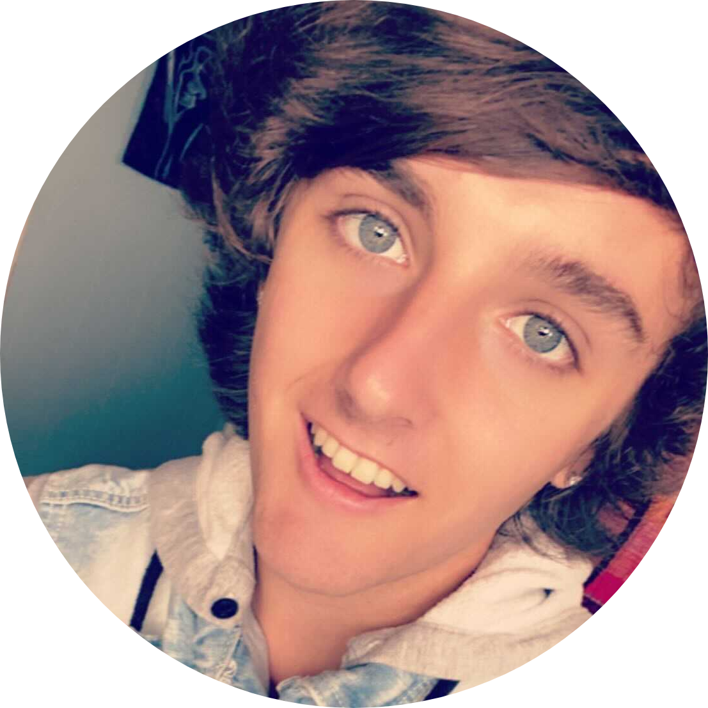
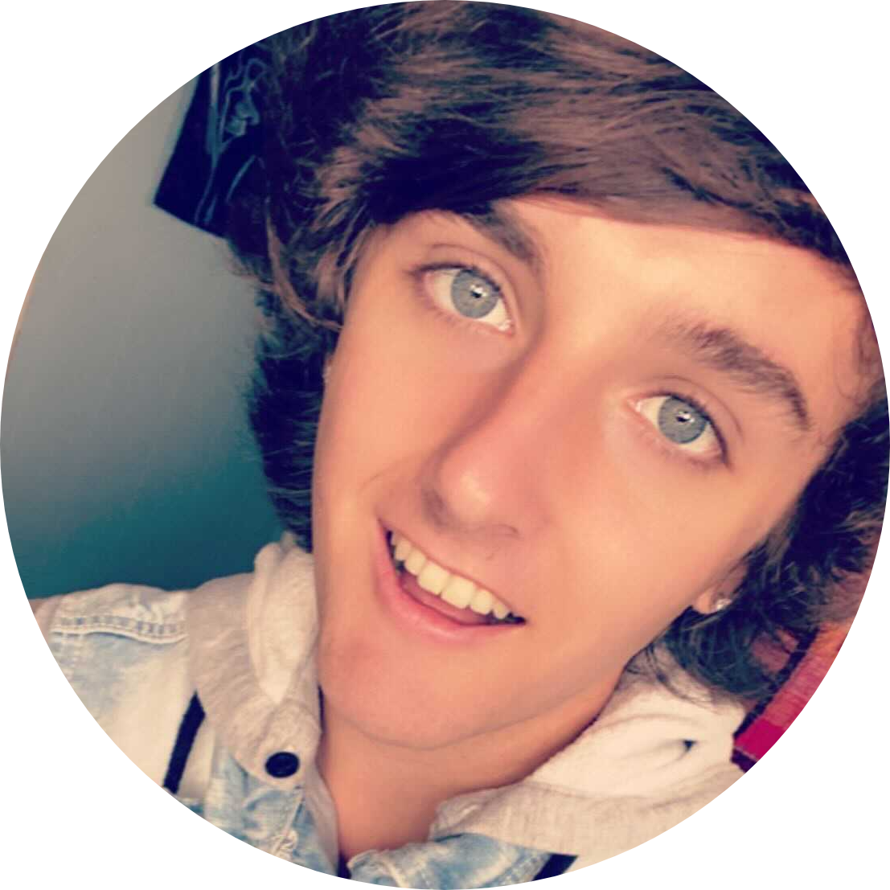